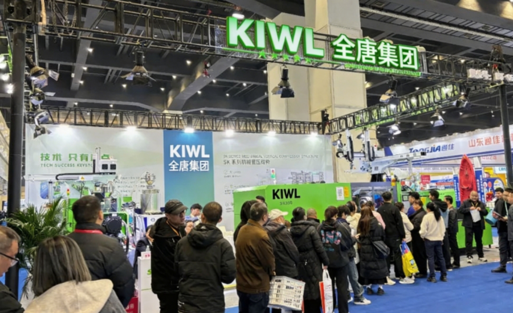
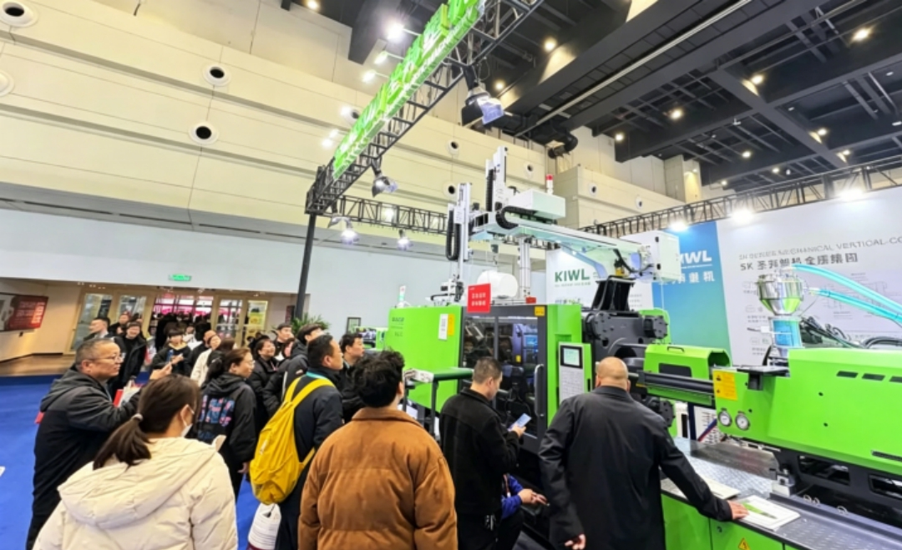
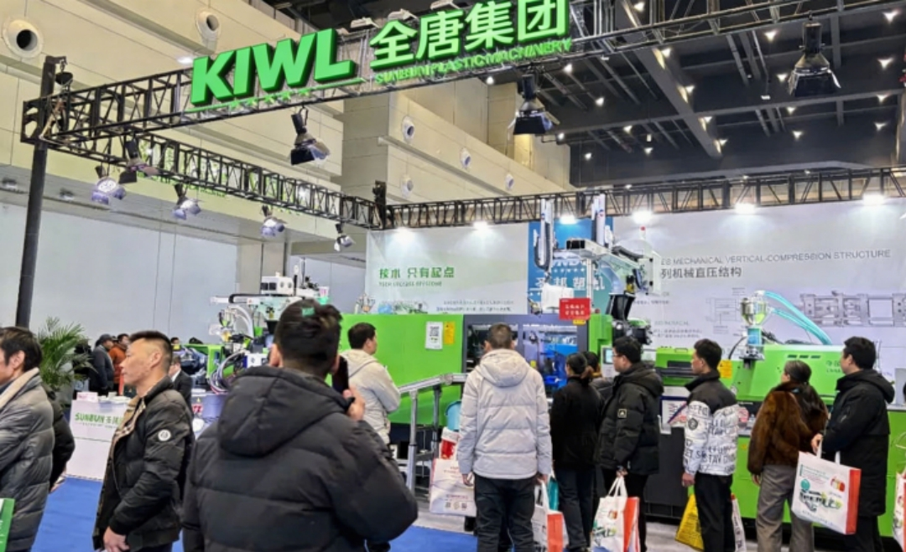
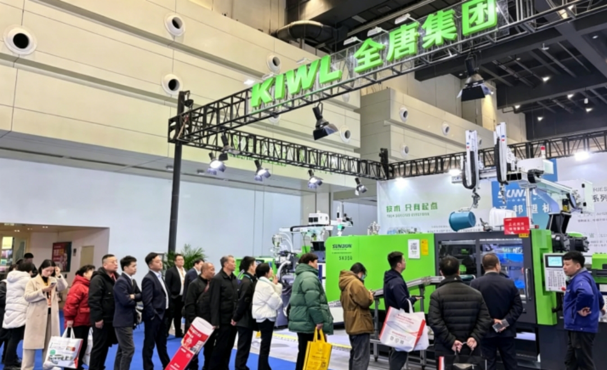

من 2 إلى 4 مارس 2025، افتُتحت الدورة الخامسة عشرة لمعرض صناعة البلاستيك في الصين (تشنغتشو) في مركز تشengzhou الدولي للمؤتمرات والمعارض.
  

في هذا المعرض، عرضت KIWL منتجين نجمين مطورين حديثاً.
1. SK350 آلة متخصصة للمنتجات ذات التجاويف العميقة. استنادًا إلى الماكينة القياسية، يتميز هذا الطراز بزيادة إضافية في مسار فتح القالب ونظام محرك أقوى، مما يتيح تكيفًا أفضل مع قولبة المنتجات ذات التجاويف العميقة والتنسيق مع الروبوتات لإخراج القالب.
2. SK240 آلة متخصصة لـ PET هجينة كهربائية-هيدروليكية. يتميز هذا المنتج بقدرة بلمرة عالية واستهلاك طاقة منخفض ودورة تشكيل قصيرة، مما يوفر حماية أفضل لمنتجات PET.
خلال المعرض، ناقشت KIWL اتجاهات تطور صناعة البلاستيك مع خبراء الصناعة وممثلي العملاء، وشاركت حالات تطبيق آلات KIWL في قطاعات السيارات والأجهزة المنزلية والتعبئة والسلع الاستهلاكية. تلتزم KIWL دائماً بتوجه طلبات العملاء، وتسعى جاهدة لتقديم حلول مخصصة تساعد العملاء على خفض التكاليف وزيادة الكفاءة.
المشاركة في الدورة الخامسة عشرة من معرض صناعة البلاستيك الصيني في تشنغتشو ليست فرصة لـ KIWL لعرض قوتها وتوسيع سوقها فحسب، بل هي أيضًا خطوة استراتيجية حاسمة للتعمق في قلب السهول الوسطى والتخطيط للسوق الوطني. تشنغتشو محور نقل حيوي في المناطق الداخلية للصين. تغطي دائرتها الاقتصادية ذات نطاق ثلاث ساعات 450 مليون نسمة. بالاستفادة من موقعها الجغرافي «الواصل بين الشرق والغرب والرابط بين الشمال والجنوب»، تلعب باستمرار دورًا محوريًا كمركز اقتصادي ونقلي وثقافي في الاستراتيجية الوطنية لنهوض وسط الصين.
وبالنظر إلى المستقبل، ستستمر KIWL في التمسك بفلسفة التنمية «الابتكار بلا حدود والجودة تصنع المستقبل»، وتكافئ العملاء بمنتجات وخدمات أعلى جودة، والتقدم يدًا بيد مع الشركاء لخلق مستقبل أفضل!